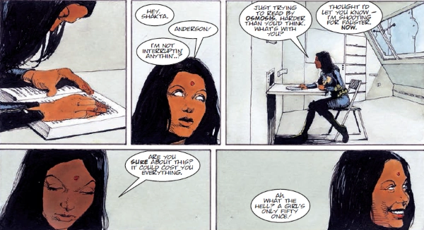

Psi-Judge Eisha Shakta was blinded during a psychic excursion into Anderson's mind to combat the Half-Life virus, but recent stem-cell treatment has allowed her to see again. She has replaced Shenker as head of Psi-Div.
Art by Arthur Ranson
| Story Title | Parts | Pages | w indicates a wraparound coverCovers | Year(s) | Issues | Writer | Artist | Colourist | Letterer |
|---|---|---|---|---|---|---|---|---|---|
From Anderson Psi Division Specifically features pre‑Judge Fire as "Fuego".Half-Life | 4 | 48 | 217: Arthur Ranson 1 | 2003-2004 | M214-M217 | Alan Grant Tony Lukevarious | Arthur Ranson | <-- | Annie Parkhouse |
From Judge DreddMaster of Fear | 3 | 18 | 1376: Cliff Robinson and Len O'Grady 1 | 2004 | 1375-1377 | Alan Grant | John Burns | <-- | Tom Frame |
From Anderson Psi DivisionWMD | 6 | 48 | 0 | 2004 | M221-M226 | Alan Grant | Arthur Ranson | <-- | Annie Parkhouse |
From Anderson Psi DivisionLock-In | 4 | 32 | 227: Garry Leach 230: Arthur Ranson 2 | 2004-2005 | M227-M230 | Alan Grant | Arthur Ranson | <-- | Annie Parkhouse |
From Anderson Psi DivisionCity of Dead | 6 | 48 | 236: Dave Taylor 1 | 2005 | M231-M236 | Alan Grant | Arthur Ranson | <-- | Annie Parkhouse |
From Anderson Psi DivisionLucid | 4 | 32 | 0 | 2005-2006 | M238-M241 | Alan Grant | Arthur Ranson | <-- | Annie Parkhouse |
From Anderson Psi Division Features mental projections of Judge Death, Satan, Orlok & a Childhood's End alien.Spa Day | 1 | 6 | 0 | 2018 | Reprints: M410 (supplement) 2KA25SFS23 | Maura McHugh | Emma Vieceli | Barbara Nosenzo | Ellie de Ville |
From Anderson Psi DivisionNo Country for Old PSIs | 1 | 10 | 0 | 2020 | M424 | Maura McHugh | Steven Austin | Barbara Nosenzo | Simon Bowland |
From Anderson Psi DivisionAll Will Be Judged | 1 | 10 | 0 | 2021 | SFS26 | Maura McHugh | Anna Morozova | Pippa Bowland | Jim Campbell |
From Anderson Psi DivisionDissolution | 3 | 30 | M445: Rachael Stott1 | 2022 | M445-M447 | Maura McHugh | Lee Carter | <-- | Annie Parkhouse |
From Judge Dredd Featuring Ichabod Azrael's horse.Buratino Must Die | 5 | 38 | 2305: Boo Cook1 | 2022 | 2303-2305, 2307-2309 | Rob Williams | Henry Flint | <-- | Annie Parkhouse |
| year | episodes | pages |
| 2001 | 0 | 0 |
| 2002 | 0 | 0 |
| 2003 | 1 | 12 |
| 2004 | 13 | 110 |
| 2005 | 12 | 96 |
| 2006 | 1 | 8 |
| 2007 | 0 | 0 |
| 2008 | 0 | 0 |
| 2009 | 0 | 0 |
| 2010 | 0 | 0 |
| 2011 | 0 | 0 |
| 2012 | 0 | 0 |
| 2013 | 0 | 0 |
| 2014 | 0 | 0 |
| 2015 | 0 | 0 |
| 2016 | 0 | 0 |
| 2017 | 0 | 0 |
| 2018 | 1 | 6 |
| 2019 | 0 | 0 |
| 2020 | 1 | 10 |
| 2021 | 1 | 10 |
| 2022 | 8 | 68 |
| 2023 | 0 | 0 |
| 2024 | 0 | 0 |